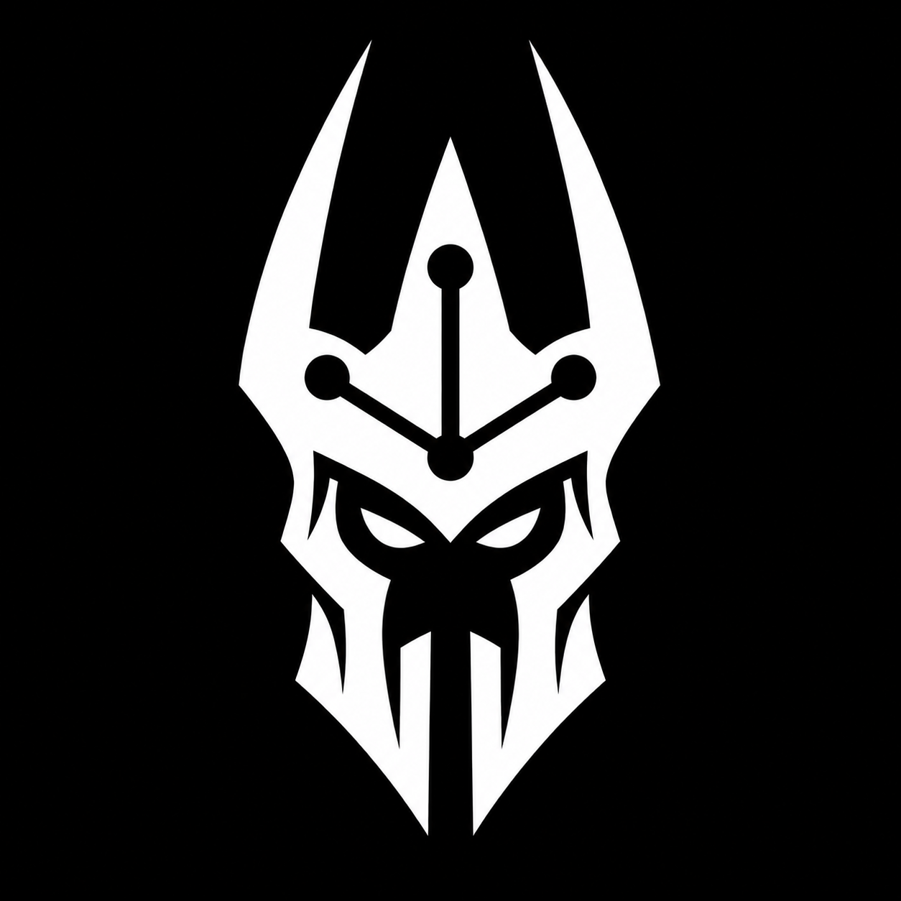

Open-source Git client
gitoverlord
A desktop Git client that looks like a futuristic control panel.
Rust/Tauri 2/React/macOS · Linux
· Windows

A desktop Git client that looks like a futuristic control panel.